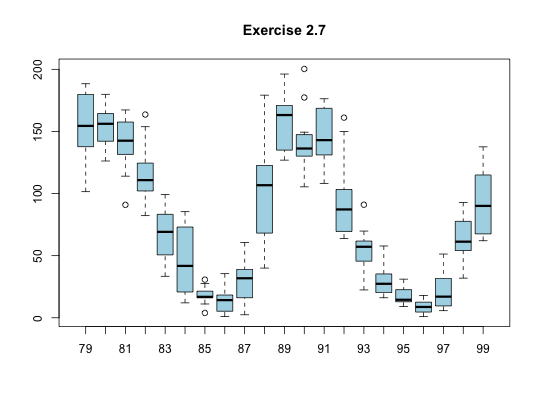

Data for Exercise 2.7
Yearsunspot
A data frame with 252 observations on the following 24 variables.
Kitchens, L. J. (2003) Basic Statistics and Data Analysis. Duxbury
str(Yearsunspot)#> 'data.frame': 252 obs. of 24 variables: #> $ X1979: num 167 138 138 102 134 ... #> $ X1980: num 160 155 126 164 180 ... #> $ X1981: num 114 141 136 156 128 ... #> $ X1982: num 111.2 163.6 153.8 122 82.2 ... #> $ X1983: num 84.3 51 66.5 80.7 99.2 91.1 82.2 71.8 50.3 55.8 ... #> $ X1984: num 57 85.4 83.5 69.7 76.4 46.1 37.4 25.5 15.7 12 ... #> $ X1985: num 16.5 15.9 17.2 16.2 27.5 24.2 30.7 11.1 3.9 18.6 ... #> $ X1986: num 2.5 23.2 15.1 18.5 13.7 1.1 18.1 7.4 3.8 35.5 ... #> $ X1987: num 10.4 2.4 14.8 39.3 30.6 17.5 33 38.6 33.5 60.5 ... #> $ X1988: num 59 40 76.2 88 60.1 ... #> $ X1989: num 161 165 131 131 138 ... #> $ X1990: num 177 130 140 140 132 ... #> $ X1991: num 137 168 142 140 121 ... #> $ X1992: num 150 161.1 106.7 99.8 73.8 ... #> $ X1993: num 59.3 91 69.8 62.2 61.3 49.8 57.9 42.2 22.4 56.4 ... #> $ X1994: num 57.8 35.5 31.7 16.1 17.8 28 35.1 22.5 25.7 43.8 ... #> $ X1995: num 24.2 29.9 31.1 14 14.5 15.6 14.5 14.3 11.8 21.1 ... #> $ X1996: num 11.5 4.4 9.2 4.8 5.5 11.8 8.2 14.4 1.6 0.9 ... #> $ X1997: num 5.7 7.6 8.7 15.5 18.5 12.7 10.4 24.4 51.3 22.8 ... #> $ X1998: num 31.9 40.3 54.8 53.4 56.3 70.6 66.2 91.7 92.9 55.6 ... #> $ X1999: num 62 66.3 68.8 63.7 106.4 ... #> $ X2000: num 90.2 112.3 138.2 NA NA ... #> $ SSN : num 167 138 138 102 134 ... #> $ year : int 79 79 79 79 79 79 79 79 79 79 ... #>attach(Yearsunspot) boxplot(SSN~year,main="Exercise 2.7",col="lightblue")detach(Yearsunspot)